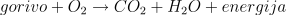
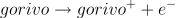

Plamen je viden, ioniziran plinasti del ognja. Pojavi se zaradi močne eksotermne reakcije. Nekateri plameni so dovolj vroči (imajo dovolj visoko temperaturo), da je njihova ionizirana plinasta sestava dovolj gosta, da jih obravnavamo kot plazmo. Gostota ionov pa ni odvisna le od temperature plamena, pač pa tudi od materiala, ki ga uporabimo za gorivo.
Ob normalnih pogojih je plamen sveče simetričen. Ko pa ga postavimo v električno polje (ki ga ustvarimo s ploščatim kondenzatorjem), opazimo, da se plamen asimetrično deli v dve veji, ki se odklanjata proti različno nabitima ploščama. Asimetrija se pojavi zaradi reakcije prostih elektronov, ki v plamenu obstajajo zaradi ionizacije, z molekulami iz okoliškega zraka. Tako nastane presežek pozitivnih ionov prisotnih v plamenu, ki potujejo proti negativno nabiti plošči.
Kemijske reakcije, ki se dogajajo v plamenu so povezane s kisikom:
gorenje: Reakcija je močno eksotermna, torej se pri njej sprosti veliko energije. Toplota nato dvigne temperaturo do te mere, da dobimo energijo ionizacije (najmanjša energija, ki jo je potrebno dovesti, da atomu oz. molekuli odtrgamo en elektron). Tako dobimo razstavljene molekule na pozitivne katione in negativne elektrone v visokih temperaturnih območjih.
ionizacija: Če imamo svečo postavljeno v električno polje, bo na prisotne ionizirane delce delovala električna sila. Pozitivni delci se bodo odklonili proti negativno nabiti plošči in negativni delci se bodo odklonili k pozitivno nabiti plošči. Ker so pozitivno nabiti ioni precej večji od negativno nabitih, se bo simetrija sveče pokvarila. K nesimetriji pripomorejo tudi elektroni, ki reagirajo z okoliškim zrakom. Tako se ustavi presežek pozitivnih ionov - večje število delcev bo tako »potovalo« proti negativno nabiti plošči kondenzatorja.